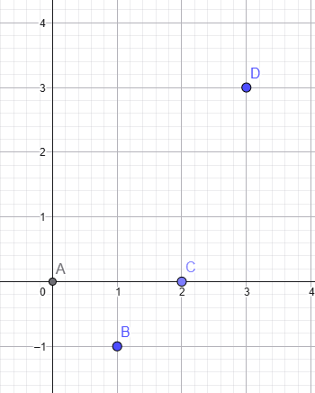
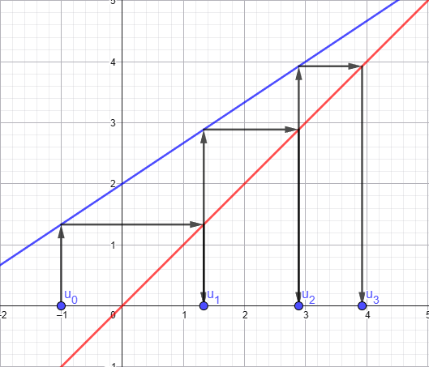
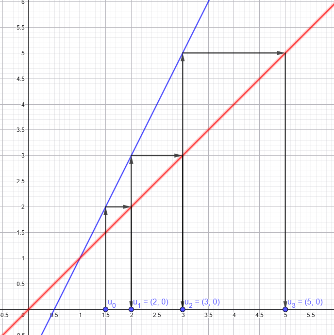
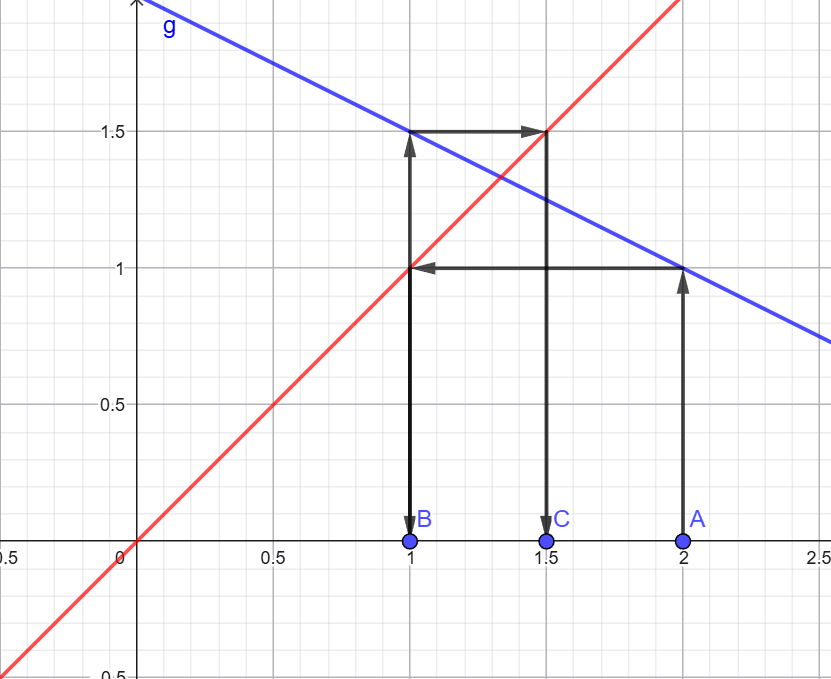
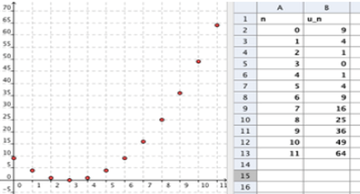

Chapitre 3 - Généralités sur les suites
I - Vocabulaire et notions
Une suite numérique est une liste (infinie) de nombres, appelés termes, qui sont ordonnés et numérotés. Le premier terme d'une suite \(u\) se note \(u_1\), le suivant \(u_2\)... et plus généralement, le terme de rang \(n\), appelé aussi terme d'indice \(n\), se note \(u_n\). L'ensemble de tous ces termes, qui constitue la suite, est noté \(u\) et plus souvent \((u_n)\).
Remarques :
- Une suite est en fait une fonction définie sur \(\mathbb{N}\) des entiers naturels : à chaque entier \(n\) elle fait correspondre une et une seule image \(u_n\).
- Comme l'ensemble \(\mathbb{N}\) a pour plus petit élément 0, il est très courant de noter \(u_0\) le premier terme de la suite. En fonction des situations, on choisira de démarrer à \(u_1\) ou \(u_0\) ou encore d'autres indices.
II - Différents modes de définition
1) Suites définies en fonction de \(n\) (forme explicite)
Définition : Les termes ne dépendent que de leur rang \(n\). On peut calculer n'importe quel terme directement. \(u_n\) est défini à partir d'une formule dépendant de \(n\).
Méthode : Calculer des termes d'une suite définie en fonction de \(n\).
Calculer les 4 premiers termes des suites suivantes :
a) \(u_n=2n\)
- \(u_0=2\times 0=0\)
- \(u_1=2\times 1=2\)
- \(u_2=2\times 2=4\)
- \(u_3=2\times 3=6\)
b) \(v_n=3n+2\)
- \(v_0=3\times 0+2=2\)
- \(v_1=3\times 1+2=5\)
- \(v_2=3\times 2+2=8\)
- \(v_3=3\times 3+2=11\)
2) Suites définies par récurrence
Définition : Définir une suite par une rotation de récurrence, c'est donner un ou plusieurs termes et une relation permettant de calculer un terme à partir d'un ou plusieurs termes précédents.
Méthode : Calculer des termes d'une suite définie par récurrence (1)
Calculer les quatre premiers termes des suites suivantes :
a) Pour tout entier \(n\), on donne :
- \(u_0=5\)
- \(u_{n+1}=3u_n\)
- \(u_0=5\)
- \(u_1=3u_0=3\times 5=15\)
- \(u_2=3u_1=3\times 15=45\)
- \(u_3=3u_2=3\times 45=135\)
b) Pour tout entier \(n\), on donne :
- \(v_0=3\)
- \(v_{n+1}=4v_n-6\)
- \(v_0=3\)
- \(v_1=4v_0-6=4\times 3-6=6\)
- \(v_2=4v_1-6=4\times 6-6=18\)
- \(v_3=4v_2-6=4\times 18-6=66\)
Méthode : Calculer un terme à l'aide d'un algorithme
Pour tout entier \(n\), on donne :
- \(u_0=3\)
- \(u_{n+1}=4u_n-6\)
def terme_un(n):
u=3
for i in range (1,n+1):
u=4*n-6
return u
II - Représentation d'une suite
1) Cas d'une suite définie explicitement
Méthode : Pour représenter graphiquement une suite numérique \((u_n)\), on dessine le nuage de points de coordonnées \((n;u_n)\) pour \(n\) entier naturel. On trouve donc en abcisses les rangs \(n\) (entiers positifs) et en ordonnées les termes \(u_n\).
Remarque : Cette technique ne diffère pas vraiment de la techinique habituelle pour représenter les fonctions. Si la suite \((u_n)\) est définie par une formule explicite du type \(u_n=f(n)\), on peut tracer la courbe de la fonction \(f\), puis y matérialiser les points d'abcisses entières.
Exemple : Soit \((u_n)\) la suite définie sur \(\mathbb{N}\) par \(u_n=n^2-2n=f(2n)\)
(\(f(x)=x^2-2x\))
- \(u_0=0^2-2\times 0=0\)
- \(u_1=1^2-2\times 1=-1\)
- \(u_2=2^2-2\times 2=0\)
- \(u_3=3^2-2\times 3=3\)

2) Cas d'une suite définie par récurrence
Exemples :
-
Soit \((u_n)\) définie sur \(\mathbb{N}\) par :
- \(u_0=-1\)
- \(u_{n+1}=\frac{2}{3}u_n+2\)
a) Calculer les 3 premiers termes
- \(u_1=\frac{2}{3}\times u_0+2=\frac{2}{3}\times (-1)+2=\frac{4}{3}\)
- \(u_2=\frac{2}{3}\times u_1+2=\frac{2}{3}\times \frac{4}{3}+2=\frac{26}{9}\)
- \(u_3=\frac{2}{3}\times u_2+2=\frac{2}{3}\times \frac{26}{9}+2=\frac{106}{27}\)
b) Représentation graphique

-
a) On considère \((u_n)\) définie sur \(\mathbb{N}\) par :
- \(u_0=1,5\)
- \(u_{n+1}=2u_n-1\)
b) Même question avec la suite \(v_n\) définie sur \(\mathbb{N}\) par :i. Tracer dans un repère orthonormé les droites d'équations \(y=2x-1\) et \(y=x\).
ii. Construire les premiers termes de \(u_n\).
- \(u_0=1,5\)
- \(u_1=2\times 1,5-1=2\)
- \(u_2=2\times 2-1=3\)
- \(u_2=2\times 3-1=5\)

- \(v_0=2\)
- \(v_{n+1}=-\frac{1}{2}v_n+2\)

IV - Sens de variation d'une suite numérique
Exemple :

On peut conjecturer que cette suite est croissante pour \(n\geq 3\).
Définitions :
Soit un entier \(p\) et une suite numérique \(u_n\).
- La suite \(u_n\) est croissante à partir du rang \(p\) signifie que pour \(n\geq p\), on a \(u_{n+1}\geq u_n\).
- La suite \(u_n\) est décroissante à partir du rang \(p\) signifie que pour \(n\geq p\), on a \(u_{n+1}\leq u_n\).
Méthode :
- On étudie, pour tout \(n\) entier naturel, le signe de \(u_{n+1}-u_n\) que l'on compare à 0.
- Lorsque les termes de la suite sont strictements positifs, on compare à \(\frac{u_{n+1}}{u_n}\) à 1.
- Lorsque \(u_n=f(n)\), on étudie les variations de \(f\) sur \([0;+\infty[\). Si \(f\) est une fonction monotone (croissante ou décroissante) sur \([n_0;+\infty[\), alors la suite \((u_n)\) est monotone à partir du rang \(n_0\).
- Si \(u_{n+1}=f(u_n)\), où \(f\) est une fonction, on peut faire un raisonnement par récurrence (cf. terminale).
Exemples :
1) Pour tout \(n\) de \(\mathbb{N}\), on donne la suite \((u_n)\) définie par : \(u_n=n^2-4n+4\).
Démontrer que la suite \((u_n)\) est croissante à partir d'un certain rang.
Je calcule \(u_{n+1}-u_n\) :
\(u_{n+1}-u_n=(n+1^2)-4(n+1)+4-(n^2-4n+4)\)
\(=n^2+2n+1-4n-4+4-n^2+4n-4\)
\(=2n+1-4=2n-3\)
On résout \(=2n-3\geq 0\) :
\(2n-3\geq 0\)
\(\Leftrightarrow 2n\geq 3\)
\(\Leftrightarrow n\geq \frac{3}{2}\) (car \(2\gt 0\))
Donc la suite est croissante à partir du rang \(n=2\).
2) Pour tout \(n\) de \(\mathbb{N}\)*, on donne la suite \((v_n)\) définie par : \(v_n=\frac{1}{n(n+1)}\).
Démontrer que la suite \((v_n)\) est décroissante.
On calcule \(\frac{v_{n+1}}{v_n}\) :
\(\frac{v_{n+1}}{v_n}=\frac{\frac{1}{(n+1)(n+2)}}{\frac{1}{n(n+1)}}\)
\(=\frac{1}{(n+1)(n+2)}\times {\frac{n(n+1)}{1}}\)
\(=\frac{n}{(n+2)}\lt 1\)
Donc \(\frac{v_{n+1}}{v_n}\lt 1\) donc \(v_{n+1}\lt v_n\) donc \((v_n)\) est décroissante \(\forall n\in \mathbb{N}\)*.
Propriété : Soit une fonction \(f\) définie sur \([0;+\infty[\) et une suite numérique \((u_n)\) définie sur \(\mathbb{N}\) par \(u_n=f(n)\). Soit un entier \(p\).
- Si \(f\) est croissante sur l'intervalle \([p;+\infty[\), alors la suite \((u_n)\) est croissante à partir du rang \(p\).
- Si \(f\) est décroissante sur l'intervalle \([p;+\infty[\), alors la suite \((u_n)\) est décroissante à partir du rang \(p\).
Démonstration :
\(f\) est croissante sur \([p;+\infty[\), donc par définition d'une fonction croissante, on a pour tout entier \(n\geq p\) : comme \(n+1\gt n\), \(f(n+1)\gt f(n)\) et donc \(u_{n+1}>u_n\).